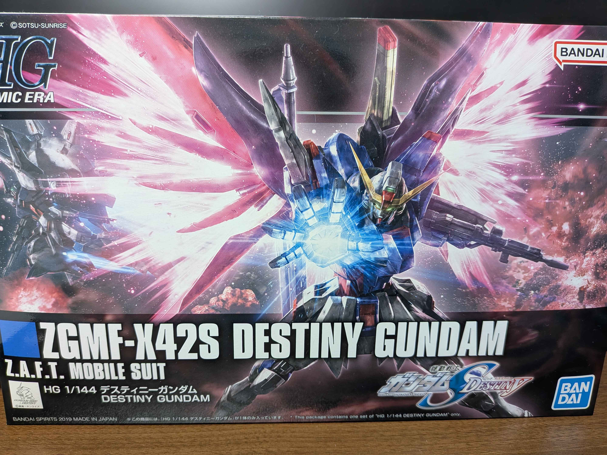
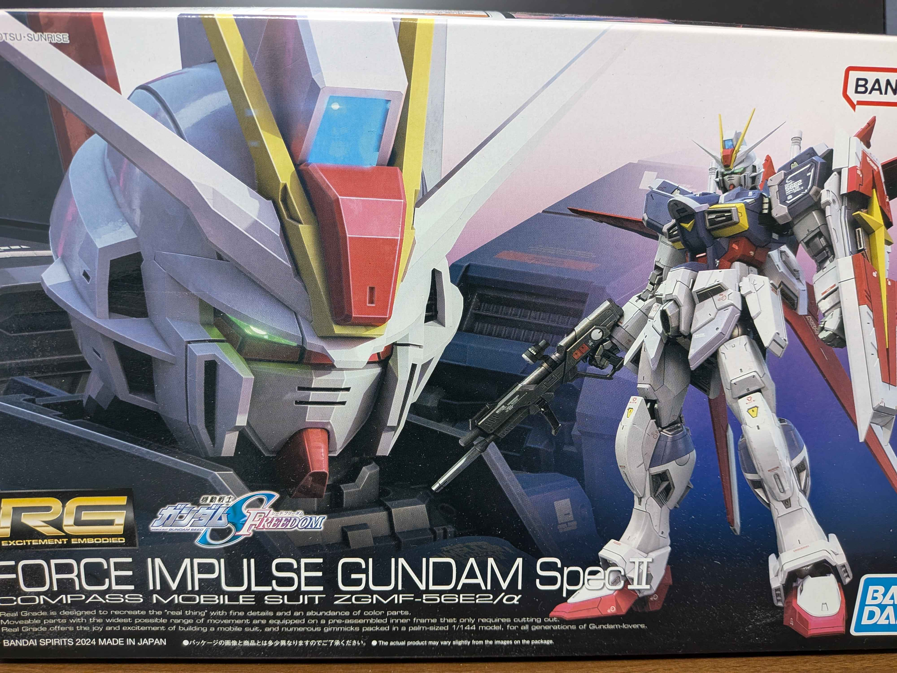

最新キット レビュー
素組ビルダーの視点から、最新ガンプラの「色分け」「パーツ分割」「ゲートの位置」などを徹底検証。塗装をしなくてもどこまで格好良く仕上がるかをレビューします。
注目のキット紹介

HG 1/144 諸々
最新のHGはパーツ分割が非常に優秀で、シールによる色分け補完が最小限に抑えられています。ゲートの大部分がクサビ型ゲートになっており、初心者でも2度切りがしやすく、素組派にはたまらない完成度です。

RG 1/144 リアルグレード最新作
アドヴァンスドMSジョイントと実機ライクな装甲分割が特徴。アンダーゲートが多数採用されているため、ニッパーでパチパチと切り離すだけでゲート跡が外から全く見えなくなる、まさに究極の素組推奨キットです。
レビュー閲覧日：